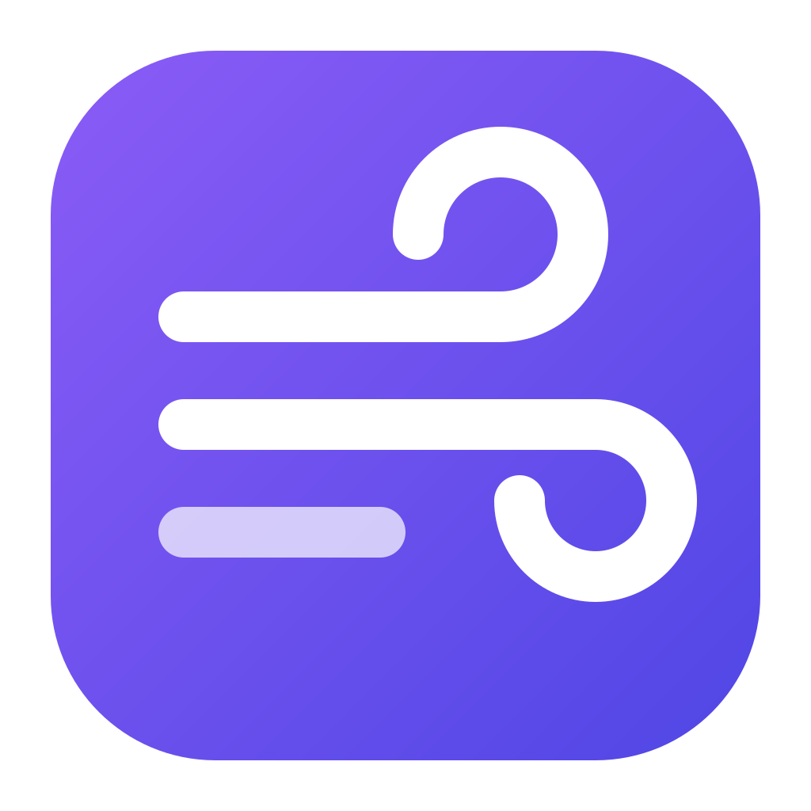

AerisIl PC pulito, aggiornato e sotto controllo.
Aeris è un programma per Windows che pulisce i file inutili, aggiorna programmi e driver, controlla cosa parte all'avvio e ripara Windows. Senza pubblicità, senza elementi nascosti: ogni modifica si può annullare.
Scarica Aeris per WindowsPulizia con avvisi chiari
Scegli cosa pulire da un catalogo; se una voce ha conseguenze (password, cronologia) Aeris te lo dice prima.
Aggiornamenti verificati
Programmi, app dello Store, Windows e driver in un passaggio, senza richieste di conferma per ogni installer.
Pulizia cloud e posta
Trova copie e file pesanti su Google Drive, OneDrive e Dropbox e messaggi ingombranti nella posta. Tutto resta sul tuo PC.
Tutto si annulla
Ogni modifica finisce nel Centro annulla: se qualcosa non ti torna, rimetti com'era con un clic.